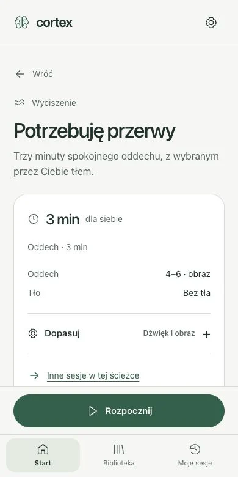
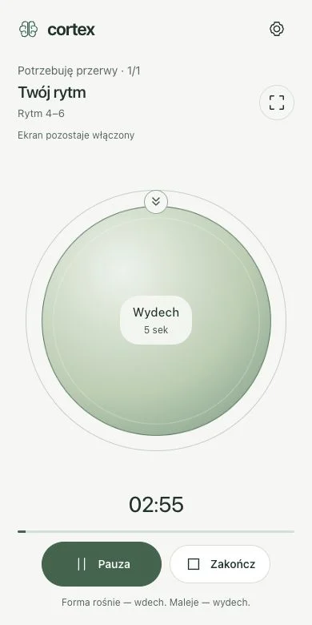

Zaczynam pracę
Jedno zadanie. Trochę miejsca na myśli. Dźwięk, który może Ci towarzyszyć.
ODDECH. DŹWIĘK. TWOJA CHWILA.
Prowadzony oddech i sesje dźwiękowe do skupienia, przerwy i wieczornego odpoczynku. Otwórz Cortex i wybierz chwilę dla siebie.

ZACZNIJ OD MAŁEJ CHWILI
Wystarczy miejsce na jeden spokojny oddech. Zobacz, jak Cortex prowadzi Cię przez wdech i wydech.
Oddychaj wygodnie. Nie wymuszaj tempa ani głębokości.
Przejdź do pełnych 3 minutDwa cykle. Bez dźwięku.
W RYTMIE TWOJEGO DNIA
Przed pierwszym zadaniem. Pomiędzy spotkaniami. Kiedy dzień dobiega końca.
Jedno zadanie. Trochę miejsca na myśli. Dźwięk, który może Ci towarzyszyć.

Odsuń na moment listę spraw. Podążaj za spokojnym rytmem wdechu i wydechu.

Zamknij laptop. Wybierz spokojny dźwięk i czarny ekran na koniec dnia.
PROSTO. OD PIERWSZEJ CHWILI.
Wybierasz sesję. Dopasowujesz ją, jeśli chcesz. Zaczynasz. Wszystko, czego potrzebujesz, jest pod ręką.
Pięć ścieżek i gotowe propozycje.
Oddech, dźwięk i czytelne prowadzenie.
Zapisz ulubioną sesję na kolejny dzień.


JEDNA PRZESTRZEŃ. PIĘĆ ŚCIEŻEK.

Sesje i ustawienia zapisują się na Twoim urządzeniu. Bez konta i obowiązkowej ankiety na wejściu.
Jak korzystać z CortexOpisujemy, co wiemy o oddechu i dźwięku. Badania nad technikami nie są badaniami tej wersji Cortex — nie obiecujemy konkretnego efektu zdrowotnego.
Poznaj podstawy i źródłaZANIM ZACZNIESZ
Nie. Otwierasz Cortex, wybierasz sesję i zaczynasz. Historia i zapisane ustawienia pozostają w przeglądarce na Twoim urządzeniu. Możesz je wyeksportować w ustawieniach.
Tak, w przeglądarce. Na iPhonie otwórz aplikację w Safari, wybierz Udostępnij → Dodaj do ekranu początkowego. Na Androidzie użyj opcji Zainstaluj aplikację lub Dodaj do ekranu głównego. System telefonu może przerwać dźwięk po zablokowaniu ekranu.
Do samego prowadzenia oddechu nie są potrzebne. Sesje z tonami binauralnymi wymagają słuchawek stereo. Zacznij od komfortowej, niewielkiej głośności.
Aplikacja może działać offline po przygotowaniu jej zasobów podczas pierwszego wejścia z internetem. Gotowość sprawdzisz w ustawieniach. Przeglądarka może usunąć zapisane zasoby; ilustracje tej strony wymagają połączenia.
Od trzech minut łagodnego oddechu 4–6: cztery sekundy wdechu, sześć wydechu. Oddychaj wygodnie, bez wymuszania tempa i głębokości. Jeśli rytm jest niewygodny, wróć do naturalnego oddechu. W każdej chwili możesz przerwać.
TA CHWILA MOŻE BYĆ TWOJA
Trzy minuty. Bez zakładania konta.